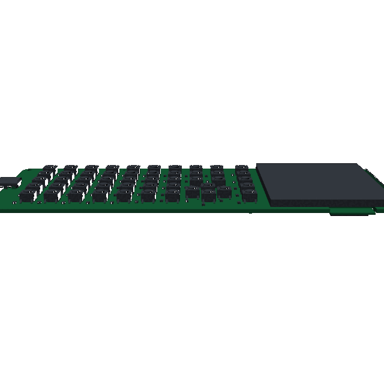
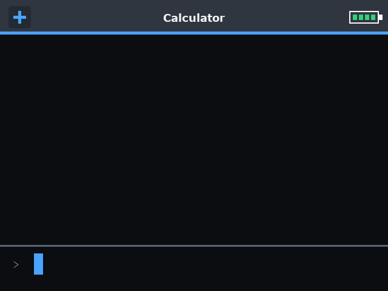
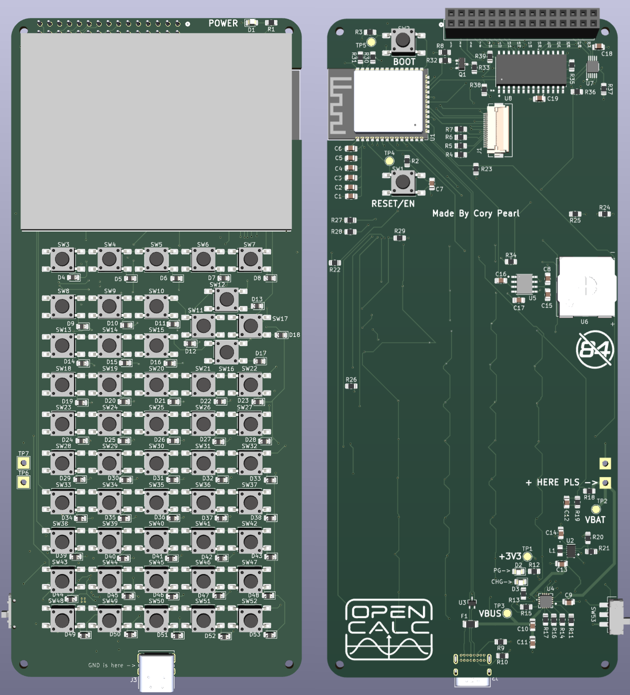

Open hardware / GPL-3.0-or-later
OpenCalc
A graphing calculator built to be opened, programmed, and connected.
Dual-core ESP32-S3. Embedded symbolic math. Tiny Python. A 16-channel sensor header. One USB-C cable.
More open. More expandable. Less expensive to produce.
The TI-84 Evo is the polished classroom benchmark. OpenCalc takes a different position: full project access, a real embedded CAS, exposed scientific I/O, and hardware you can rebuild.
| Comparison | OpenCalc V5 | TI-84 Evo |
|---|---|---|
| Processor | Dual-core ESP32-S3, up to 240 MHz | 156 MHz processor |
| Display | 320 × 240 full panel | 320 × 240 panel; 319 × 209 graph area |
| Math engine | Embedded Giac/KhiCAS CAS plus numerical math | Polynomial and system solvers; no general CAS |
| Programming | Tiny Python with graphics, keys, files, audio, math, and sensor APIs | Python and TI-Basic |
| Expansion | 12 digital, 4 analog, and shared I2C on the rear header | Vendor-supported classroom accessories |
| Project access | GPL firmware, KiCad PCB, enclosure, tests, and build files | Vendor-managed hardware and operating system |
| Price | $32–51 estimated unit costProduction estimate, not a retail offer | $129.99 advertised$129.99 regular price at Staples, checked Sep. 2026 |
| Exam use | Not submitted or approved for standardized exams | Approved for ACT, SAT, PSAT, IB, and AP exams |
Clock speed alone is not a cross-architecture performance benchmark. Evo specifications come from Texas Instruments; price from Staples.

The math is connected to the rest of the device.
Enter a function once, then move between its graph, table, roots, derivative, integral, tangent line, and shaded area. Alpha + Graph opens the linked analysis view.
-
Symbolic and numericalExact algebra, complex values, units such as
8 m / 2 s, calculus, matrices, statistics, and solving. - Programming that reaches hardwareScripts can draw, read keys, save files, play game audio, and sample attached sensors.
- Two cores with separate jobsThe UI stays responsive while queued math and system work run on the other core.
- One cableUSB-C handles power, charging, files, firmware flashing, and the serial console.

Read a sensor. Plot it. Keep the data in L1.
The optional V5 scientific-I/O profile provides twelve 3.3 V digital channels, four 16-bit analog inputs, and I2C. Tiny Python exposes them directly:
sensors.rate(128)
sensors.list_clear(1)
for sample in range(60):
value = sensors.analog_read(0)
sensors.list_append(1, value)
print(sensors.list_count(1))Prototype note: sensor inputs are 3.3 V only. The V5 scientific-I/O and audio paths still need final-board validation.
Real hardware. Honest limits.
- The calculator, display, keypad, USB, power system, persistence, and five games run on the prototype.
- The embedded CAS is not full desktop Xcas; Tiny Python is intentionally smaller than CPython.
- Long CAS/script cancellation, 99 × 99 matrices, and new V5 peripherals still need extended hardware soak tests.
Clone. Build. Flash.
OpenCalc targets ESP-IDF 6.0.1 and the ESP32-S3. The repository contains the firmware, V5 KiCad project, enclosure files, storage image, and host tests.
git clone https://github.com/CoryPearl/opencalc.git
cd opencalc/firmware
idf.py build
idf.py -p PORT flash
idf.py -p PORT monitor